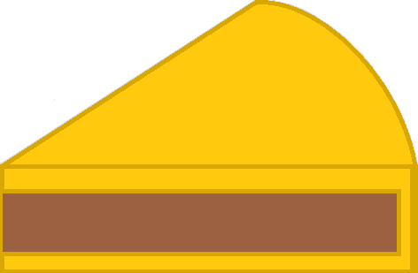

"Sve su pite pitice al' burek je pitac"
Postoji jedna stvar pred zoru, koja se ne može naći nigde na svetu sem u Beogradu;
uzalud je tražiti i po pariskom Klinjankuru, rimskom Trastevereu
i po gastronomskom kvartu u Briselu pokraj Gran plasa – to je burek!
-Momo Kapor